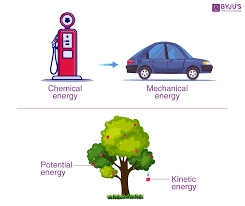

<!DOCTYPE html>
<html lang="en"></html>
<html>
<head>
    <title>law of conservation of energy</title>
</head>
<h1>LAW OF CONSERVATION OF ENERGY</h1>

<p>The law of conservation of energy is a fundamental principle in physics
     that states that energy cannot be created or destroyed, it can only be transformed from one form to another.
      This means that the total amount of energy in a system remains constant over time.
       According to the law of conservation of energy, energy can be converted from potential energy to kinetic energy,
        heat energy, or any other form of energy, but the total amount of energy in the system
         always remains the same. This law has many practical applications, from designing efficient energy systems
          to understanding the behavior of physical systems.
           Overall, the law of conservation of energy is a fundamental concept
            that underlies much of our understanding of how the universe works.</p>


</html>